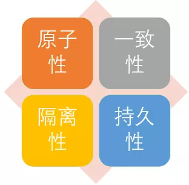
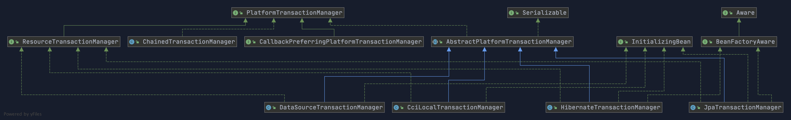

大家好，我是 Guide 哥，前段时间答应读者的 **Spring 事务**分析总结终于来了。这部分内容比较重要，不论是对于工作还是面试，但是网上比较好的参考资料比较少。
如果本文有任何不对或者需要完善的地方，请帮忙指出！Guide 哥感激不尽！
1. 什么是事务？
事务是逻辑上的一组操作，要么都执行，要么都不执行。
Guide 哥：大家应该都能背上面这句话了，下面我结合我们日常的真实开发来谈一谈。
我们系统的每个业务方法可能包括了多个原子性的数据库操作，比如下面的 savePerson() 方法中就有两个原子性的数据库操作。这些原子性的数据库操作是有依赖的，它们要么都执行，要不就都不执行。
public void savePerson() {
personDao.save(person);
personDetailDao.save(personDetail);
}
另外，需要格外注意的是：事务能否生效数据库引擎是否支持事务是关键。比如常用的 MySQL 数据库默认使用支持事务的innodb引擎。但是，如果把数据库引擎变为 myisam，那么程序也就不再支持事务了！
事务最经典也经常被拿出来说例子就是转账了。假如小明要给小红转账 1000 元，这个转账会涉及到两个关键操作就是：
将小明的余额减少 1000 元
将小红的余额增加 1000 元。
万一在这两个操作之间突然出现错误比如银行系统崩溃或者网络故障，导致小明余额减少而小红的余额没有增加，这样就不对了。事务就是保证这两个关键操作要么都成功，要么都要失败。
public class OrdersService {
private AccountDao accountDao;
public void setOrdersDao(AccountDao accountDao) {
this.accountDao = accountDao;
}
@Transactional(propagation = Propagation.REQUIRED,
isolation = Isolation.DEFAULT, readOnly = false, timeout = -1)
public void accountMoney() {
//小红账户多1000
accountDao.addMoney(1000,xiaohong);
//模拟突然出现的异常，比如银行中可能为突然停电等等
//如果没有配置事务管理的话会造成，小红账户多了1000而小明账户没有少钱
int i = 10 / 0;
//小王账户少1000
accountDao.reduceMoney(1000,xiaoming);
}
}
另外，数据库事务的 ACID 四大特性是事务的基础，下面简单来了解一下。
2. 事务的特性（ACID）了解么?

- 原子性（Atomicity）： 一个事务（transaction）中的所有操作，或者全部完成，或者全部不完成，不会结束在中间某个环节。事务在执行过程中发生错误，会被回滚（Rollback）到事务开始前的状态，就像这个事务从来没有执行过一样。即，事务不可分割、不可约简。
- 一致性（Consistency）： 在事务开始之前和事务结束以后，数据库的完整性没有被破坏。这表示写入的资料必须完全符合所有的预设约束、触发器、级联回滚等。
- 隔离性（Isolation）： 数据库允许多个并发事务同时对其数据进行读写和修改的能力，隔离性可以防止多个事务并发执行时由于交叉执行而导致数据的不一致。事务隔离分为不同级别，包括未提交读（Read uncommitted）、提交读（read committed）、可重复读（repeatable read）和串行化（Serializable）。
- 持久性（Durability）: 事务处理结束后，对数据的修改就是永久的，即便系统故障也不会丢失。
参考 ：https://zh.wikipedia.org/wiki/ACID 。
3. 详谈 Spring 对事务的支持
再提醒一次：你的程序是否支持事务首先取决于数据库 ，比如使用 MySQL 的话，如果你选择的是 innodb 引擎，那么恭喜你，是可以支持事务的。但是，如果你的 MySQL 数据库使用的是 myisam 引擎的话，那不好意思，从根上就是不支持事务的。
这里再多提一下一个非常重要的知识点： MySQL 怎么保证原子性的？
我们知道如果想要保证事务的原子性，就需要在异常发生时，对已经执行的操作进行回滚，在 MySQL 中，恢复机制是通过 回滚日志（undo log） 实现的，所有事务进行的修改都会先先记录到这个回滚日志中，然后再执行相关的操作。如果执行过程中遇到异常的话，我们直接利用 回滚日志 中的信息将数据回滚到修改之前的样子即可！并且，回滚日志会先于数据持久化到磁盘上。这样就保证了即使遇到数据库突然宕机等情况，当用户再次启动数据库的时候，数据库还能够通过查询回滚日志来回滚将之前未完成的事务。
3.1. Spring 支持两种方式的事务管理
1).编程式事务管理
通过 TransactionTemplate或者TransactionManager手动管理事务，实际应用中很少使用，但是对于你理解 Spring 事务管理原理有帮助。
使用TransactionTemplate 进行编程式事务管理的示例代码如下：
@Autowired
private TransactionTemplate transactionTemplate;
public void testTransaction() {
transactionTemplate.execute(new TransactionCallbackWithoutResult() {
@Override
protected void doInTransactionWithoutResult(TransactionStatus transactionStatus) {
try {
// .... 业务代码
} catch (Exception e){
//回滚
transactionStatus.setRollbackOnly();
}
}
});
}
使用 TransactionManager 进行编程式事务管理的示例代码如下：
@Autowired
private PlatformTransactionManager transactionManager;
public void testTransaction() {
TransactionStatus status = transactionManager.getTransaction(new DefaultTransactionDefinition());
try {
// .... 业务代码
transactionManager.commit(status);
} catch (Exception e) {
transactionManager.rollback(status);
}
}
2)声明式事务管理
推荐使用（代码侵入性最小），实际是通过 AOP 实现（基于@Transactional 的全注解方式使用最多）。
使用 @Transactional注解进行事务管理的示例代码如下：
@Transactional(propagation=propagation.PROPAGATION_REQUIRED)
public void aMethod {
//do something
B b = new B();
C c = new C();
b.bMethod();
c.cMethod();
}
3.2. Spring 事务管理接口介绍
Spring 框架中，事务管理相关最重要的 3 个接口如下：
PlatformTransactionManager： （平台）事务管理器，Spring 事务策略的核心。TransactionDefinition： 事务定义信息(事务隔离级别、传播行为、超时、只读、回滚规则)。TransactionStatus： 事务运行状态。
我们可以把 PlatformTransactionManager 接口可以被看作是事务上层的管理者，而 TransactionDefinition 和 TransactionStatus 这两个接口可以看作是事务的描述。
PlatformTransactionManager 会根据 TransactionDefinition 的定义比如事务超时时间、隔离级别、传播行为等来进行事务管理 ，而 TransactionStatus 接口则提供了一些方法来获取事务相应的状态比如是否新事务、是否可以回滚等等。
3.2.1. PlatformTransactionManager:事务管理接口
Spring 并不直接管理事务，而是提供了多种事务管理器 。Spring 事务管理器的接口是： PlatformTransactionManager 。
通过这个接口，Spring 为各个平台如 JDBC(DataSourceTransactionManager)、Hibernate(HibernateTransactionManager)、JPA(JpaTransactionManager)等都提供了对应的事务管理器，但是具体的实现就是各个平台自己的事情了。
PlatformTransactionManager 接口的具体实现如下:

PlatformTransactionManager接口中定义了三个方法：
package org.springframework.transaction;
import org.springframework.lang.Nullable;
public interface PlatformTransactionManager {
//获得事务
TransactionStatus getTransaction(@Nullable TransactionDefinition var1) throws TransactionException;
//提交事务
void commit(TransactionStatus var1) throws TransactionException;
//回滚事务
void rollback(TransactionStatus var1) throws TransactionException;
}
这里多插一嘴。为什么要定义或者说抽象出来PlatformTransactionManager这个接口呢？
主要是因为要将事务管理行为抽象出来，然后不同的平台去实现它，这样我们可以保证提供给外部的行为不变，方便我们扩展。我前段时间分享过：“为什么我们要用接口？”

3.2.2. TransactionDefinition:事务属性
事务管理器接口 PlatformTransactionManager 通过 getTransaction(TransactionDefinition definition) 方法来得到一个事务，这个方法里面的参数是 TransactionDefinition 类 ，这个类就定义了一些基本的事务属性。
那么什么是 事务属性 呢？
事务属性可以理解成事务的一些基本配置，描述了事务策略如何应用到方法上。
事务属性包含了 5 个方面：

TransactionDefinition 接口中定义了 5 个方法以及一些表示事务属性的常量比如隔离级别、传播行为等等。
package org.springframework.transaction;
import org.springframework.lang.Nullable;
public interface TransactionDefinition {
int PROPAGATION_REQUIRED = 0;
int PROPAGATION_SUPPORTS = 1;
int PROPAGATION_MANDATORY = 2;
int PROPAGATION_REQUIRES_NEW = 3;
int PROPAGATION_NOT_SUPPORTED = 4;
int PROPAGATION_NEVER = 5;
int PROPAGATION_NESTED = 6;
int ISOLATION_DEFAULT = -1;
int ISOLATION_READ_UNCOMMITTED = 1;
int ISOLATION_READ_COMMITTED = 2;
int ISOLATION_REPEATABLE_READ = 4;
int ISOLATION_SERIALIZABLE = 8;
int TIMEOUT_DEFAULT = -1;
// 返回事务的传播行为，默认值为 REQUIRED。
int getPropagationBehavior();
//返回事务的隔离级别，默认值是 DEFAULT
int getIsolationLevel();
// 返回事务的超时时间，默认值为-1。如果超过该时间限制但事务还没有完成，则自动回滚事务。
int getTimeout();
// 返回是否为只读事务，默认值为 false
boolean isReadOnly();
@Nullable
String getName();
}
3.2.3. TransactionStatus:事务状态
TransactionStatus接口用来记录事务的状态 该接口定义了一组方法,用来获取或判断事务的相应状态信息。
PlatformTransactionManager.getTransaction(…)方法返回一个 TransactionStatus 对象。
TransactionStatus 接口接口内容如下：
public interface TransactionStatus{
boolean isNewTransaction(); // 是否是新的事务
boolean hasSavepoint(); // 是否有恢复点
void setRollbackOnly(); // 设置为只回滚
boolean isRollbackOnly(); // 是否为只回滚
boolean isCompleted; // 是否已完成
}
3.3. 事务属性详解
实际业务开发中，大家一般都是使用 @Transactional 注解来开启事务，很多人并不清楚这个参数里面的参数是什么意思，有什么用。为了更好的在项目中使用事务管理，强烈推荐好好阅读一下下面的内容。
3.3.1. 事务传播行为
事务传播行为是为了解决业务层方法之间互相调用的事务问题。
当事务方法被另一个事务方法调用时，必须指定事务应该如何传播。例如：方法可能继续在现有事务中运行，也可能开启一个新事务，并在自己的事务中运行。
举个例子！
我们在 A 类的aMethod（）方法中调用了 B 类的 bMethod() 方法。这个时候就涉及到业务层方法之间互相调用的事务问题。如果我们的 bMethod()如果发生异常需要回滚，如何配置事务传播行为才能让 aMethod()也跟着回滚呢？这个时候就需要事务传播行为的知识了，如果你不知道的话一定要好好看一下。
Class A {
@Transactional(propagation=propagation.xxx)
public void aMethod {
//do something
B b = new B();
b.bMethod();
}
}
Class B {
@Transactional(propagation=propagation.xxx)
public void bMethod {
//do something
}
}
在TransactionDefinition定义中包括了如下几个表示传播行为的常量：
public interface TransactionDefinition {
int PROPAGATION_REQUIRED = 0;
int PROPAGATION_SUPPORTS = 1;
int PROPAGATION_MANDATORY = 2;
int PROPAGATION_REQUIRES_NEW = 3;
int PROPAGATION_NOT_SUPPORTED = 4;
int PROPAGATION_NEVER = 5;
int PROPAGATION_NESTED = 6;
......
}
不过如此，为了方便使用，Spring 会相应地定义了一个枚举类：Propagation
package org.springframework.transaction.annotation;
import org.springframework.transaction.TransactionDefinition;
public enum Propagation {
REQUIRED(TransactionDefinition.PROPAGATION_REQUIRED),
SUPPORTS(TransactionDefinition.PROPAGATION_SUPPORTS),
MANDATORY(TransactionDefinition.PROPAGATION_MANDATORY),
REQUIRES_NEW(TransactionDefinition.PROPAGATION_REQUIRES_NEW),
NOT_SUPPORTED(TransactionDefinition.PROPAGATION_NOT_SUPPORTED),
NEVER(TransactionDefinition.PROPAGATION_NEVER),
NESTED(TransactionDefinition.PROPAGATION_NESTED);
private final int value;
Propagation(int value) {
this.value = value;
}
public int value() {
return this.value;
}
}
正确的事务传播行为可能的值如下 ：
1.TransactionDefinition.PROPAGATION_REQUIRED
使用的最多的一个事务传播行为，我们平时经常使用的@Transactional注解默认使用就是这个事务传播行为。如果当前存在事务，则加入该事务；如果当前没有事务，则创建一个新的事务。也就是说：
- 如果外部方法没有开启事务的话，
Propagation.REQUIRED修饰的内部方法会新开启自己的事务，且开启的事务相互独立，互不干扰。 - 如果外部方法开启事务并且被
Propagation.REQUIRED的话，所有Propagation.REQUIRED修饰的内部方法和外部方法均属于同一事务 ，只要一个方法回滚，整个事务均回滚。
举个例子：如果我们上面的aMethod()和bMethod()使用的都是PROPAGATION_REQUIRED传播行为的话，两者使用的就是同一个事务，只要其中一个方法回滚，整个事务均回滚。
Class A {
@Transactional(propagation=propagation.PROPAGATION_REQUIRED)
public void aMethod {
//do something
B b = new B();
b.bMethod();
}
}
Class B {
@Transactional(propagation=propagation.PROPAGATION_REQUIRED)
public void bMethod {
//do something
}
}
2.TransactionDefinition.PROPAGATION_REQUIRES_NEW
创建一个新的事务，如果当前存在事务，则把当前事务挂起。也就是说不管外部方法是否开启事务，Propagation.REQUIRES_NEW修饰的内部方法会新开启自己的事务，且开启的事务相互独立，互不干扰。
举个例子：如果我们上面的bMethod()使用PROPAGATION_REQUIRES_NEW事务传播行为修饰，aMethod还是用PROPAGATION_REQUIRED修饰的话。如果aMethod()发生异常回滚，bMethod()不会跟着回滚，因为 bMethod()开启了独立的事务。但是，如果 bMethod()抛出了未被捕获的异常并且这个异常满足事务回滚规则的话,aMethod()同样也会回滚，因为这个异常被 aMethod()的事务管理机制检测到了。
Class A {
@Transactional(propagation=propagation.PROPAGATION_REQUIRED)
public void aMethod {
//do something
B b = new B();
b.bMethod();
}
}
Class B {
@Transactional(propagation=propagation.REQUIRES_NEW)
public void bMethod {
//do something
}
}
3.TransactionDefinition.PROPAGATION_NESTED:
如果当前存在事务，则创建一个事务作为当前事务的嵌套事务来运行；如果当前没有事务，则该取值等价于TransactionDefinition.PROPAGATION_REQUIRED。也就是说：
- 在外部方法未开启事务的情况下
Propagation.NESTED和Propagation.REQUIRED作用相同，修饰的内部方法都会新开启自己的事务，且开启的事务相互独立，互不干扰。 - 如果外部方法开启事务的话，
Propagation.NESTED修饰的内部方法属于外部事务的子事务，外部主事务回滚的话，子事务也会回滚，而内部子事务可以单独回滚而不影响外部主事务和其他子事务。
这里还是简单举个例子：
如果 aMethod() 回滚的话，bMethod()和bMethod2()都要回滚，而bMethod()回滚的话，并不会造成 aMethod() 和bMethod()2回滚。
Class A {
@Transactional(propagation=propagation.PROPAGATION_REQUIRED)
public void aMethod {
//do something
B b = new B();
b.bMethod();
b.bMethod2();
}
}
Class B {
@Transactional(propagation=propagation.PROPAGATION_NESTED)
public void bMethod {
//do something
}
@Transactional(propagation=propagation.PROPAGATION_NESTED)
public void bMethod2 {
//do something
}
}
4.TransactionDefinition.PROPAGATION_MANDATORY
如果当前存在事务，则加入该事务；如果当前没有事务，则抛出异常。（mandatory：强制性）
这个使用的很少，就不举例子来说了。
若是错误的配置以下 3 种事务传播行为，事务将不会发生回滚，这里不对照案例讲解了，使用的很少。
TransactionDefinition.PROPAGATION_SUPPORTS: 如果当前存在事务，则加入该事务；如果当前没有事务，则以非事务的方式继续运行。TransactionDefinition.PROPAGATION_NOT_SUPPORTED: 以非事务方式运行，如果当前存在事务，则把当前事务挂起。TransactionDefinition.PROPAGATION_NEVER: 以非事务方式运行，如果当前存在事务，则抛出异常。
更多关于事务传播行为的内容请看这篇文章：《太难了~面试官让我结合案例讲讲自己对 Spring 事务传播行为的理解。》
3.3.2 事务隔离级别
TransactionDefinition 接口中定义了五个表示隔离级别的常量：
public interface TransactionDefinition {
......
int ISOLATION_DEFAULT = -1;
int ISOLATION_READ_UNCOMMITTED = 1;
int ISOLATION_READ_COMMITTED = 2;
int ISOLATION_REPEATABLE_READ = 4;
int ISOLATION_SERIALIZABLE = 8;
......
}
和事务传播行为这块一样，为了方便使用，Spring 也相应地定义了一个枚举类：Isolation
public enum Isolation {
DEFAULT(TransactionDefinition.ISOLATION_DEFAULT),
READ_UNCOMMITTED(TransactionDefinition.ISOLATION_READ_UNCOMMITTED),
READ_COMMITTED(TransactionDefinition.ISOLATION_READ_COMMITTED),
REPEATABLE_READ(TransactionDefinition.ISOLATION_REPEATABLE_READ),
SERIALIZABLE(TransactionDefinition.ISOLATION_SERIALIZABLE);
private final int value;
Isolation(int value) {
this.value = value;
}
public int value() {
return this.value;
}
}
下面我依次对每一种事务隔离级别进行介绍：
TransactionDefinition.ISOLATION_DEFAULT:使用后端数据库默认的隔离级别，MySQL 默认采用的REPEATABLE_READ隔离级别 Oracle 默认采用的READ_COMMITTED隔离级别.TransactionDefinition.ISOLATION_READ_UNCOMMITTED:最低的隔离级别，使用这个隔离级别很少，因为它允许读取尚未提交的数据变更，可能会导致脏读、幻读或不可重复读TransactionDefinition.ISOLATION_READ_COMMITTED: 允许读取并发事务已经提交的数据，可以阻止脏读，但是幻读或不可重复读仍有可能发生TransactionDefinition.ISOLATION_REPEATABLE_READ: 对同一字段的多次读取结果都是一致的，除非数据是被本身事务自己所修改，可以阻止脏读和不可重复读，但幻读仍有可能发生。TransactionDefinition.ISOLATION_SERIALIZABLE: 最高的隔离级别，完全服从 ACID 的隔离级别。所有的事务依次逐个执行，这样事务之间就完全不可能产生干扰，也就是说，该级别可以防止脏读、不可重复读以及幻读。但是这将严重影响程序的性能。通常情况下也不会用到该级别。
因为平时使用 MySQL 数据库比较多，这里再多提一嘴！
MySQL InnoDB 存储引擎的默认支持的隔离级别是 REPEATABLE-READ（可重读）。我们可以通过SELECT @@tx_isolation;命令来查看，MySQL 8.0 该命令改为SELECT @@transaction_isolation;
mysql> SELECT @@tx_isolation;
+-----------------+
| @@tx_isolation |
+-----------------+
| REPEATABLE-READ |
+-----------------+
这里需要注意的是：与 SQL 标准不同的地方在于 InnoDB 存储引擎在 REPEATABLE-READ（可重读） 事务隔离级别下使用的是Next-Key Lock 锁算法，因此可以避免幻读的产生，这与其他数据库系统(如 SQL Server)是不同的。所以说InnoDB 存储引擎的默认支持的隔离级别是 REPEATABLE-READ（可重读） 已经可以完全保证事务的隔离性要求，即达到了 SQL标准的 SERIALIZABLE(可串行化) 隔离级别。
🐛问题更正：MySQL InnoDB的REPEATABLE-READ（可重读）并不保证避免幻读，需要应用使用加锁读来保证。而这个加锁度使用到的机制就是 Next-Key Locks。
因为隔离级别越低，事务请求的锁越少，所以大部分数据库系统的隔离级别都是 READ-COMMITTED(读取提交内容) ，但是你要知道的是InnoDB 存储引擎默认使用 REPEAaTABLE-READ（可重读） 并不会有任何性能损失。
InnoDB 存储引擎在 分布式事务 的情况下一般会用到 SERIALIZABLE(可串行化) 隔离级别。
🌈拓展一下(以下内容摘自《MySQL技术内幕：InnoDB存储引擎(第2版)》7.7章)：
InnoDB存储引擎提供了对XA事务的支持，并通过XA事务来支持分布式事务的实现。分布式事务指的是允许多个独立的事务资源（transactional resources）参与到一个全局的事务中。事务资源通常是关系型数据库系统，但也可以是其他类型的资源。全局事务要求在其中的所有参与的事务要么都提交，要么都回滚，这对于事务原有的ACID要求又有了提高。另外，在使用分布式事务时，InnoDB存储引擎的事务隔离级别必须设置为SERIALIZABLE。
3.3.3. 事务超时属性
所谓事务超时，就是指一个事务所允许执行的最长时间，如果超过该时间限制但事务还没有完成，则自动回滚事务。在 TransactionDefinition 中以 int 的值来表示超时时间，其单位是秒，默认值为-1。
3.3.4. 事务只读属性
package org.springframework.transaction;
import org.springframework.lang.Nullable;
public interface TransactionDefinition {
......
// 返回是否为只读事务，默认值为 false
boolean isReadOnly();
}
对于只有读取数据查询的事务，可以指定事务类型为 readonly，即只读事务。只读事务不涉及数据的修改，数据库会提供一些优化手段，适合用在有多条数据库查询操作的方法中。
很多人就会疑问了，为什么我一个数据查询操作还要启用事务支持呢？
拿 MySQL 的 innodb 举例子，根据官网 https://dev.mysql.com/doc/refman/5.7/en/innodb-autocommit-commit-rollback.html 描述：
MySQL 默认对每一个新建立的连接都启用了
autocommit模式。在该模式下，每一个发送到 MySQL 服务器的sql语句都会在一个单独的事务中进行处理，执行结束后会自动提交事务，并开启一个新的事务。
但是，如果你给方法加上了Transactional注解的话，这个方法执行的所有sql会被放在一个事务中。如果声明了只读事务的话，数据库就会去优化它的执行，并不会带来其他的什么收益。
如果不加Transactional，每条sql会开启一个单独的事务，中间被其它事务改了数据，都会实时读取到最新值。
分享一下关于事务只读属性，其他人的解答：
- 如果你一次执行单条查询语句，则没有必要启用事务支持，数据库默认支持 SQL 执行期间的读一致性；
- 如果你一次执行多条查询语句，例如统计查询，报表查询，在这种场景下，多条查询 SQL 必须保证整体的读一致性，否则，在前条 SQL 查询之后，后条 SQL 查询之前，数据被其他用户改变，则该次整体的统计查询将会出现读数据不一致的状态，此时，应该启用事务支持
3.3.5. 事务回滚规则
这些规则定义了哪些异常会导致事务回滚而哪些不会。默认情况下，事务只有遇到运行期异常（RuntimeException 的子类）时才会回滚，Error 也会导致事务回滚，但是，在遇到检查型（Checked）异常时不会回滚。

如果你想要回滚你定义的特定的异常类型的话，可以这样：
@Transactional(rollbackFor= MyException.class)
3.4. @Transactional 注解使用详解
1) @Transactional 的作用范围
- 方法 ：推荐将注解使用于方法上，不过需要注意的是：该注解只能应用到 public 方法上，否则不生效。
- 类 ：如果这个注解使用在类上的话，表明该注解对该类中所有的 public 方法都生效。
- 接口 ：不推荐在接口上使用。
2) @Transactional 的常用配置参数
@Transactional注解源码如下，里面包含了基本事务属性的配置：
@Target({ElementType.TYPE, ElementType.METHOD})
@Retention(RetentionPolicy.RUNTIME)
@Inherited
@Documented
public @interface Transactional {
@AliasFor("transactionManager")
String value() default "";
@AliasFor("value")
String transactionManager() default "";
Propagation propagation() default Propagation.REQUIRED;
Isolation isolation() default Isolation.DEFAULT;
int timeout() default TransactionDefinition.TIMEOUT_DEFAULT;
boolean readOnly() default false;
Class<? extends Throwable>[] rollbackFor() default {};
String[] rollbackForClassName() default {};
Class<? extends Throwable>[] noRollbackFor() default {};
String[] noRollbackForClassName() default {};
}
@Transactional 的常用配置参数总结（只列出了 5 个我平时比较常用的）：
| 属性名 | 说明 |
|---|---|
| propagation | 事务的传播行为，默认值为 REQUIRED，可选的值在上面介绍过 |
| isolation | 事务的隔离级别，默认值采用 DEFAULT，可选的值在上面介绍过 |
| timeout | 事务的超时时间，默认值为-1（不会超时）。如果超过该时间限制但事务还没有完成，则自动回滚事务。 |
| readOnly | 指定事务是否为只读事务，默认值为 false。 |
| rollbackFor | 用于指定能够触发事务回滚的异常类型，并且可以指定多个异常类型。 |
3)@Transactional 事务注解原理
面试中在问 AOP 的时候可能会被问到的一个问题。简单说下吧！
我们知道，@Transactional 的工作机制是基于 AOP 实现的，AOP 又是使用动态代理实现的。如果目标对象实现了接口，默认情况下会采用 JDK 的动态代理，如果目标对象没有实现了接口,会使用 CGLIB 动态代理。
多提一嘴：createAopProxy() 方法 决定了是使用 JDK 还是 Cglib 来做动态代理，源码如下：
public class DefaultAopProxyFactory implements AopProxyFactory, Serializable {
@Override
public AopProxy createAopProxy(AdvisedSupport config) throws AopConfigException {
if (config.isOptimize() || config.isProxyTargetClass() || hasNoUserSuppliedProxyInterfaces(config)) {
Class<?> targetClass = config.getTargetClass();
if (targetClass == null) {
throw new AopConfigException("TargetSource cannot determine target class: " +
"Either an interface or a target is required for proxy creation.");
}
if (targetClass.isInterface() || Proxy.isProxyClass(targetClass)) {
return new JdkDynamicAopProxy(config);
}
return new ObjenesisCglibAopProxy(config);
}
else {
return new JdkDynamicAopProxy(config);
}
}
.......
}
如果一个类或者一个类中的 public 方法上被标注@Transactional 注解的话，Spring 容器就会在启动的时候为其创建一个代理类，在调用被@Transactional 注解的 public 方法的时候，实际调用的是，TransactionInterceptor 类中的 invoke()方法。这个方法的作用就是在目标方法之前开启事务，方法执行过程中如果遇到异常的时候回滚事务，方法调用完成之后提交事务。
TransactionInterceptor类中的invoke()方法内部实际调用的是TransactionAspectSupport类的invokeWithinTransaction()方法。由于新版本的 Spring 对这部分重写很大，而且用到了很多响应式编程的知识，这里就不列源码了。
4)Spring AOP 自调用问题
若同一类中的其他没有 @Transactional 注解的方法内部调用有 @Transactional 注解的方法，有@Transactional 注解的方法的事务会失效。
这是由于Spring AOP代理的原因造成的，因为只有当 @Transactional 注解的方法在类以外被调用的时候，Spring 事务管理才生效。
MyService 类中的method1()调用method2()就会导致method2()的事务失效。
@Service
public class MyService {
private void method1() {
method2();
//......
}
@Transactional
public void method2() {
//......
}
}
解决办法就是避免同一类中自调用或者使用 AspectJ 取代 Spring AOP 代理。
5) @Transactional 的使用注意事项总结
-
@Transactional注解只有作用到 public 方法上事务才生效，不推荐在接口上使用； - 避免同一个类中调用
@Transactional注解的方法，这样会导致事务失效； - 正确的设置
@Transactional的 rollbackFor 和 propagation 属性，否则事务可能会回滚失败 - ......
4. Reference
[总结]Spring 事务管理中@Transactional 的参数:http://www.mobabel.net/spring 事务管理中 transactional 的参数/
Spring 官方文档：https://docs.spring.io/spring/docs/4.2.x/spring-framework-reference/html/transaction.html
《Spring5 高级编程》
透彻的掌握 Spring 中@transactional 的使用: https://www.ibm.com/developerworks/cn/java/j-master-spring-transactional-use/index.html
Spring 事务的传播特性：https://github.com/love-somnus/Spring/wiki/Spring 事务的传播特性
Spring 事务传播行为详解 ：https://segmentfault.com/a/1190000013341344
全面分析 Spring 的编程式事务管理及声明式事务管理：https://www.ibm.com/developerworks/cn/education/opensource/os-cn-spring-trans/index.html